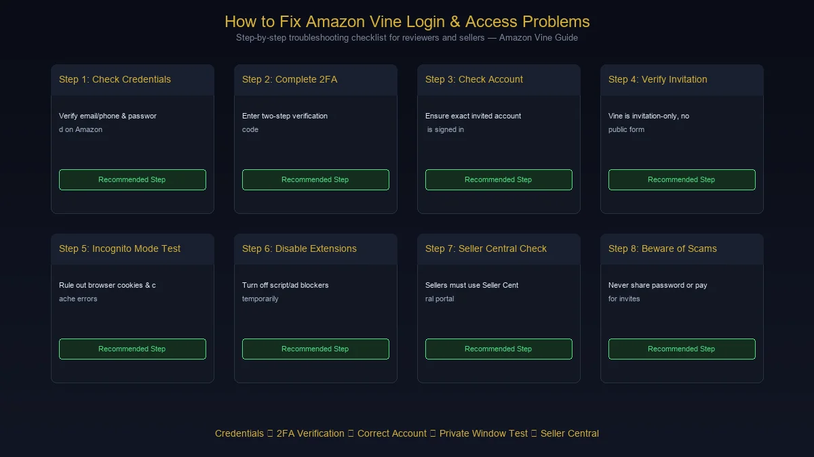
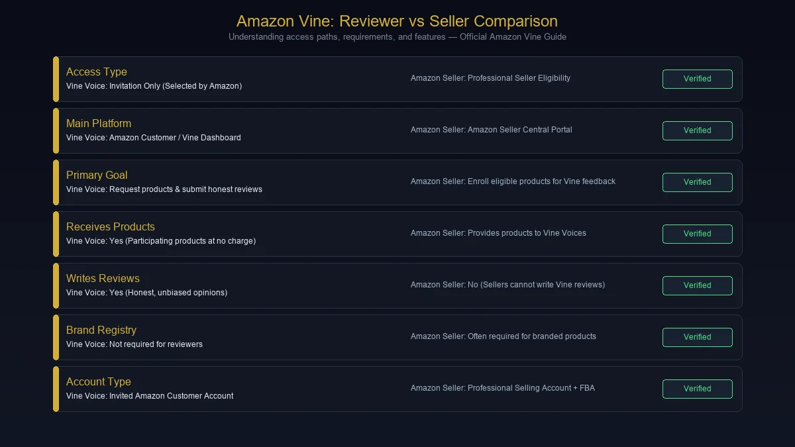

Searching for Amazon Vine login usually means you are trying to access the Amazon Vine program, check whether your Vine account is active, find the Vine dashboard, or understand why Vine is not appearing in your Amazon account.
The first thing to know is that Amazon Vine is not a normal public membership program.
Amazon Vine is an invitation-only program for selected reviewers, known as Vine Voices. Amazon says there is no public application form or sign-up page for customers who want to become Vine Voices. Invitations are based on the quality and helpfulness of a customer's review history, along with factors such as consistency and category relevance.
That explains why simply searching for an "Amazon Vine registration" page often leads to confusion.
This guide explains the Amazon Vine login process, how Vine access works, what to do when the Vine page is unavailable, how seller access differs from reviewer access, and how to avoid common login and account mistakes.
What Is Amazon Vine?
Amazon Vine is a product-review program operated by Amazon.
The program connects selected reviewers, called Vine Voices, with products enrolled by eligible sellers. Vine Voices can request participating products at no charge and provide honest, unbiased feedback after trying them. Amazon describes Vine as a way for sellers to collect authentic customer reviews and for shoppers to make more informed purchasing decisions.
There are therefore two different sides of Amazon Vine:
| Vine side | Who uses it? | Main purpose |
|---|---|---|
| Vine Voice | Invited Amazon reviewers | Request products and submit reviews |
| Vine seller | Eligible Amazon sellers/brands | Enroll eligible products for Vine reviews |
This distinction matters because the login experience and eligibility requirements are different.
Amazon Vine Login: How Does It Work?
If you have already been invited to Amazon Vine, your Vine access is associated with your Amazon account.
The basic process is:
- Sign in to your Amazon account.
- Make sure you are using the account associated with your Vine invitation.
- Open the Amazon Vine area available to your account.
- If your account has Vine access, the relevant Vine experience should be available.
- If you were not invited, you should not expect a normal public Vine registration page to unlock the program.
Amazon's own seller forum guidance confirms that Vine Voice participation is invitation-only and that there is no application form for reviewers.
Important
Do not confuse the normal Amazon customer login with guaranteed Vine access.
Having an Amazon account does not automatically make someone a Vine Voice.
Is There a Separate Amazon Vine Login?
This is where many searches for Amazon Vine login become confusing.
You still use your Amazon account credentials, but Vine access is controlled separately by program eligibility.
In other words:
Amazon account → Sign in → Vine eligibility/access → Vine experience
If you can sign in to Amazon normally but cannot access Vine, the problem may not be your password at all.
It may simply mean:
- You have not been invited.
- You are signed into a different Amazon account.
- The invitation is associated with another account.
- Your Vine access has changed.
- The Vine service is temporarily unavailable.
- You are accessing the wrong marketplace or account environment.
So an ordinary Amazon login problem and a Vine eligibility problem are two different things.
How to Sign In to Amazon Vine
If you are already a Vine Voice, use the following general process.
Step 1: Sign in to Amazon
Start with the Amazon account you normally use for shopping and reviewing products.
Amazon supports several sign-in methods depending on how your account is configured, including a password, one-time security code, or passkey.
Step 2: Confirm the Account
This is one of the most important steps.
If you have multiple Amazon accounts, make sure you are using the account that received the Vine invitation.
Using another Amazon account can make it appear as though Vine access has disappeared.
Step 3: Open Your Vine Access
After signing in, access the Amazon Vine experience associated with your account.
If your account is eligible, you should be able to see the Vine interface available for your marketplace.
Step 4: Review Available Products
For Vine Voices, the dashboard can show products available to request.
The exact selection can vary because Vine inventory depends on products enrolled by participating sellers and the reviewer's available marketplace and account eligibility.
Step 5: Manage Your Reviews
Once you receive a Vine product, the review process is handled through the Amazon Vine environment associated with your account.
The purpose of Vine is to encourage genuine product feedback—not guaranteed positive reviews.
Amazon describes Vine reviews as honest and unbiased opinions from invited reviewers.
Why Can't I See Amazon Vine After Logging In?
This is probably the most useful section for people searching for Amazon Vine login not working.
Logging into Amazon successfully does not necessarily mean that Vine will appear.
Here are the most common explanations.
1. You Were Never Invited
Amazon Vine is invitation-only.
There is no standard public application form where every Amazon customer can register as a Vine Voice. Amazon says reviewers are selected based on their review history and related signals.
If you have never received an invitation, there may simply be no Vine access attached to your account.
2. You Are Using the Wrong Amazon Account
This is especially common for people who have:
- Personal and business Amazon accounts
- Multiple email addresses
- Multiple marketplace accounts
- Old Amazon accounts
- Separate accounts used by family members
Check the account carefully before assuming the Vine system is broken.
3. Your Invitation Is Not Active
An invitation does not mean that Vine access is permanently guaranteed under every circumstance.
Program participation is controlled by Amazon and can depend on continued eligibility and activity.
4. Marketplace Differences
Amazon operates different marketplaces around the world.
Features, availability, eligibility requirements, and program details can vary by marketplace.
Therefore, information published for Amazon.com should not automatically be assumed to apply identically to every Amazon country site.
5. Temporary Technical Problems
Sometimes a login problem really is technical.
Potential causes include:
- Browser cache problems
- Expired sessions
- Cookies
- Authentication issues
- Temporary Amazon service problems
- Browser extensions
- Network problems
In those situations, basic troubleshooting can help.
How to Fix Amazon Vine Login Problems
If you are supposed to have Vine access but cannot reach it, work through these steps in order.

Check Your Amazon Credentials
First, confirm that you can sign in to your normal Amazon account.
Amazon recommends checking the email address or mobile number associated with the account and using its password-reset process if necessary. Amazon also supports one-time security codes and passkeys for accounts configured for those methods.
Check Two-Step Verification
If Amazon asks for a security code, complete the verification process.
Amazon's two-step verification system can use a text message or authenticator app depending on your account setup.
If the code does not arrive, check that you are using the correct phone number or authenticator.
Sign Out and Back In
A stale Amazon session can occasionally cause confusing account behavior.
Sign out completely, close the browser, reopen it, and sign in again.
Try a Private Window
Open a private or incognito browser window and sign in again.
This is a quick way to test whether an old cookie or cached session is interfering with the account.
Clear Browser Data
If the private-window test works but the normal browser does not, clear relevant cookies and cached site data and try again.
Disable Problematic Extensions
Privacy tools, script blockers, aggressive ad blockers, and browser extensions can sometimes interfere with authentication or dynamic pages.
Temporarily disable extensions if necessary and test again.
Check the Correct Account
If Amazon itself works but Vine does not, return to the account question.
Ask yourself:
Is this definitely the Amazon account that received the Vine invitation?
This is often more important than changing the browser.
Amazon Vine Login vs Amazon Seller Vine Access
Another major source of confusion is that Amazon Vine has both reviewer and seller sides.
They should not be treated as the same login experience.

Vine Voice Login
A Vine Voice is an invited reviewer.
The purpose is to:
- Browse eligible Vine products
- Request products
- Receive products
- Write honest reviews
- Manage Vine activity
Amazon says Vine Voices are selected from customers based on the insightfulness of their published reviews and related signals.
Seller Vine Access
Sellers use Vine to enroll eligible products so invited reviewers can request and review them.
Amazon currently states that sellers participating in Vine need a Professional selling account and, for branded products, an appropriate role for a brand enrolled in Amazon Brand Registry. Eligible FBA offers are also part of the requirements.
Seller access is handled through Seller Central, not through a Vine Voice's reviewer dashboard.
How Amazon Vine Works for Sellers
If you are a seller searching for Amazon Vine login, your goal is probably different.
The current seller workflow is broadly:
Seller Central → Brand/eligibility → FBA listing → Vine enrollment → Vine Voices → Reviews
Amazon's official Vine page explains that eligible sellers enroll products through Seller Central. Products need to meet Amazon's eligibility requirements, and enrolled products are made available to invited Vine Voices.
Seller requirements can include:
- Professional selling account
- Eligible brand relationship
- Amazon Brand Registry for branded products
- Appropriate seller/brand permissions
- Eligible FBA inventory
- Product eligibility requirements
Amazon's requirements can change, so sellers should always verify current eligibility inside Seller Central rather than relying on an old blog post.
What Is a Vine Voice?
A Vine Voice is an Amazon customer invited to participate in the Vine program as a reviewer.
The important word is invited.
Amazon does not describe Vine as a program where customers pay a membership fee and immediately gain access.
Instead, Amazon says it selects reviewers based on their review history, including review quality, helpfulness, consistency, and category relevance.
A strong approach for someone hoping to receive an invitation is therefore simple:
Write useful reviews because they help other shoppers—not because you are trying to force an invitation.
How Can You Increase Your Chances of an Amazon Vine Invitation?
There is no guaranteed method.
However, Amazon's own guidance provides a useful clue: reviewer selection considers the quality and helpfulness of published reviews, consistency, and category relevance.
That makes the following habits sensible:
Write detailed reviews
Explain what worked, what did not, and who the product is suitable for.
Be specific
Instead of writing:
"Great product. I like it."
Explain what you actually experienced.
Review products you genuinely use
Authentic experience produces more useful feedback.
Avoid artificial behavior
Do not attempt to manipulate reviews, ratings, helpfulness votes, or Amazon's systems.
Develop expertise naturally
If you regularly purchase products in a particular category and write genuinely useful reviews, your review history can become more informative to other shoppers.
There is still no guarantee that these actions will produce an invitation.
Does Amazon Vine Cost Money to Join?
For Vine Voices, the situation is different from a normal subscription service.
Invited Vine reviewers receive participating products at no charge, but that does not mean every Vine item is economically "free" in every possible sense.
Amazon notes that Vine Voices are responsible for applicable income tax on products they receive.
Tax treatment can vary by jurisdiction, so reviewers should not rely on a generic U.S.-focused statement when they live elsewhere.
For sellers, Amazon Vine has enrollment costs that depend on the program's current pricing structure and product enrollment. Amazon's seller page should be treated as the authoritative source for current fees.
Are Amazon Vine Reviews Positive Reviews?
No.
This is an important distinction.
The purpose of Amazon Vine is not to manufacture positive ratings.
Amazon describes Vine reviews as honest and unbiased opinions. Vine Voices receive products free of charge, but they are expected to provide their genuine assessment.
That means a Vine review can be:
- Positive
- Mixed
- Neutral
- Critical
A seller should therefore view Vine as a source of authentic customer feedback rather than a system for purchasing favorable reviews.
Can Sellers Choose Which Vine Reviewer Reviews Their Product?
Vine is designed around Amazon's invited reviewer network.
Sellers enroll eligible products, while Vine Voices choose products that interest them from those available to them.
The seller's role is therefore different from directly paying an individual reviewer for a favorable opinion.
Amazon describes the system as connecting enrolled products with its invited network of Vine Voices.
Why Amazon Vine Matters for Product Reviews
Online shoppers often want more information than a product description can provide.
A seller can explain:
- Product dimensions
- Materials
- Features
- Specifications
- Compatibility
- Warranty information
But a real customer can describe things such as:
- How the product feels in daily use
- Whether setup is easy
- How it performs in practice
- What surprised them
- What they would change
- Who should or should not buy it
That is the value Amazon is trying to create through Vine.
The program gives sellers access to early customer feedback while giving shoppers additional product information.
Amazon Vine Login Security Tips
Because Vine is connected to an Amazon account, account security matters.
Never give your Amazon password to another person
Amazon credentials should remain private.
Avoid unofficial login pages
Be cautious with websites claiming to provide a special "Amazon Vine login."
If a page asks for your Amazon email and password, verify that you are actually on an official Amazon domain before entering credentials.
Use two-step verification
Amazon provides two-step verification as an additional layer of account security.
Consider a passkey
Amazon supports passkeys for compatible accounts and devices.
Be suspicious of Vine invitation scams
A message saying "You have been selected for Amazon Vine" does not automatically mean the message is genuine.
Check the sender, destination domain, and account independently instead of clicking suspicious links.
Amazon Vine Login Scams: What to Watch For
The popularity of the search term Amazon Vine login also makes it a useful phrase for scammers to exploit.
Be particularly careful with websites or messages that promise:
- Guaranteed Vine membership
- Paid Vine invitations
- Instant access
- Secret Vine registration links
- Guaranteed free products
- Guaranteed positive reviews
- Requests for your Amazon password
- Requests for verification codes
- Requests to pay someone to "activate" Vine
Amazon's own guidance makes clear that Vine Voice participation is invitation-only and that there is no public reviewer application form.
That alone should make anyone suspicious of a service claiming it can sell or guarantee Vine Voice access.
Amazon Vine Login: Common Problems and Solutions
| Problem | What to check |
|---|---|
| Amazon login fails | Verify email/phone and password |
| Verification code missing | Check phone/authenticator and request another code |
| Vine isn't visible | Confirm the correct Amazon account |
| Never received an invitation | Vine is invitation-only |
| Multiple Amazon accounts | Check which account received the invitation |
| Page keeps loading | Try private browsing and disable extensions |
| Vine access suddenly disappears | Check account status and Amazon communications |
| Seller cannot find Vine | Check Seller Central and seller eligibility |
| Suspicious Vine email | Do not enter credentials; verify independently |
| Login works but Vine does not | Distinguish authentication from Vine eligibility |
Amazon Vine Login: Reviewer vs Seller Comparison
| Feature | Vine Voice | Amazon Seller |
|---|---|---|
| Access type | Invitation | Seller eligibility |
| Main platform | Amazon customer/Vine experience | Seller Central |
| Main purpose | Review products | Enroll eligible products |
| Receives products | Yes, participating products | Provides products |
| Writes reviews | Yes | No |
| Brand Registry required | No | Often required for branded products |
| Professional selling account | No | Yes |
| FBA requirements | Not applicable as seller | Relevant for eligible offers |
The exact requirements can change, so sellers should verify current requirements through Amazon's official Vine documentation.
Is Amazon Vine Legit?
Yes. Amazon Vine is an official Amazon program.
It is operated as part of Amazon's customer-review ecosystem and has separate participation paths for invited reviewers and eligible sellers.
Amazon's official documentation describes Vine as a program where sellers provide products to invited Vine Voices, who then provide honest, unbiased opinions.
The bigger issue is not whether Amazon Vine itself is legitimate.
The issue is whether a third-party website claiming to offer Amazon Vine access is legitimate.
That is where users should be cautious.
Why You May See Conflicting Amazon Vine Login Information Online
Amazon Vine has changed over time.
Program rules, seller fees, eligibility requirements, reviewer features, marketplaces, and product limits can change.
That means an article written several years ago may still appear in Google while containing information that no longer applies.
For example, third-party guides may present old:
- Reviewer tiers
- Product limits
- Completion percentages
- Seller fees
- Tax thresholds
- Enrollment rules
- Interface instructions
For anything involving your account or money, verify the current information directly through Amazon.
This is particularly important for Amazon Vine login because the login itself is simple; the complicated part is whether your account is eligible for the Vine experience you are trying to access.
Amazon Vine Login FAQs
How do I log in to Amazon Vine?
Sign in to the Amazon account associated with your Vine invitation and access the Vine experience available to that account. Vine Voice access is invitation-only.
Is Amazon Vine login different from Amazon login?
Your Vine access is connected to your Amazon account, but being able to sign in to Amazon does not automatically mean you have Vine access.
Can anyone sign up for Amazon Vine?
No. Amazon says Vine Voice participation is invitation-only and there is no public application form for reviewers.
How do I become an Amazon Vine Voice?
There is no public application process. Amazon selects Vine Voices based on factors including the insightfulness of their reviews, review history, helpfulness, consistency, and category relevance.
Why can't I see Amazon Vine?
The most likely possibilities are that you were not invited, you are signed into a different Amazon account, your access has changed, or there is a technical issue.
Can I use another person's Vine account?
You should not share Amazon account credentials. Vine participation is associated with the invited customer's account.
Are Amazon Vine products really free?
Vine Voices receive participating products at no charge, but Amazon notes that reviewers are responsible for applicable income tax on products they receive. Tax rules depend on the relevant jurisdiction.
Do Vine Voices have to write positive reviews?
No. Amazon describes Vine reviews as honest and unbiased. The purpose is genuine customer feedback, not guaranteed positive ratings.
Can sellers join Amazon Vine?
Eligible sellers can enroll products through Seller Central. Amazon currently lists Professional selling accounts, relevant brand eligibility, and eligible FBA offers among the requirements.
Is there an Amazon Vine registration form?
There is no public reviewer application form according to Amazon's current guidance.
What should I do if Amazon Vine login is not working?
First verify your Amazon credentials and account, complete any two-step verification, then confirm that the account is actually associated with Vine. If the normal Amazon login works but Vine does not appear, the issue may be eligibility rather than authentication.
Final Takeaway: Amazon Vine Login
The phrase Amazon Vine login sounds like it should lead to a simple username-and-password page, but Vine works differently from an ordinary public membership website.
The most important facts are straightforward:
- Amazon Vine is an official Amazon review program.
- Vine Voices are invited rather than publicly registered.
- There is no public application form for customers who want to become Vine Voices.
- Vine access is connected to an Amazon account.
- Sellers access Vine through Seller Central and have different eligibility requirements.
- A successful Amazon login does not automatically mean you have Vine access.
- Login problems should be separated from eligibility problems.
- Be careful with third-party websites claiming to sell or guarantee Vine invitations.
If you have already received a Vine invitation, the first thing to check is simple: make sure you are signed into the exact Amazon account associated with that invitation.
If you have not received an invitation, there is no legitimate public Vine signup form that you need to find. Instead, focus on building a history of detailed, honest, useful Amazon reviews. Amazon says those review signals are part of how Vine Voices are selected.
For sellers, the process is separate: use Seller Central, verify your current Vine eligibility, and consult Amazon's current seller documentation before enrolling products or relying on older fee and eligibility information.
For more such useful information read our site ateliergolddruck.com